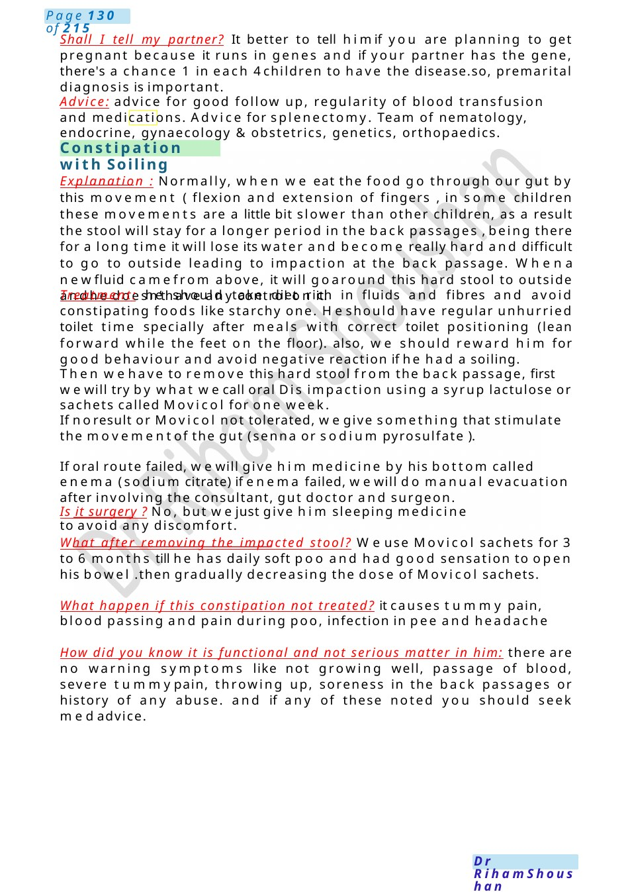
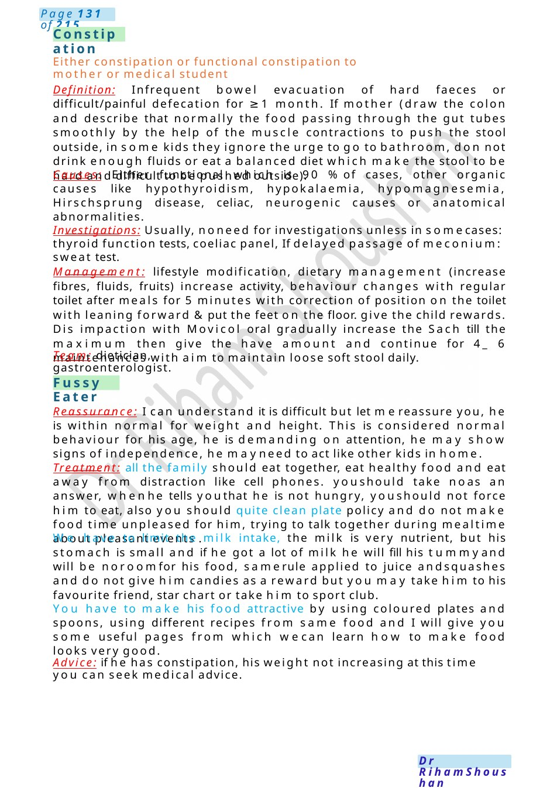

Constipation with Soiling
Shall I tell my partner? It better to tell himif you are planning to get pregnant because it runs in genes and if your partner has the gene, there's a chance 1 in each 4children to have the disease.so, premarital diagnosis is important. Advice: advice for good follow up, regularity of blood transfusion and medications. Advice for splenectomy. Team of nematology, endocrine, gynaecology & obstetrics, genetics, orthopaedics.
Scenario Summary
Shall I tell my partner? It better to tell himif you are planning to get pregnant because it runs in genes and if your partner has the gene, there's a chance 1 in each 4children to have the disease.so, premarital diagnosis is important. Advice: advice for good follow up, regularity of blood transfusion and medications. Advice for splenectomy. Team of nematology, endocrine, gynaecology & obstetrics, genetics, orthopaedics.
Full Original Scenario

Constipation with Soiling
Shall I tell my partner? It better to tell himif you are planning to get pregnant because it runs in genes and if your partner has the gene, there's a chance 1 in each 4children to have the disease.so, premarital diagnosis is important.
Advice: advice for good follow up, regularity of blood transfusion and medications. Advice for splenectomy. Team of nematology, endocrine, gynaecology & obstetrics, genetics, orthopaedics.
Explanation : Normally, when we eat the food go through our gut by this movement ( flexion and extension of fingers , in some children these movements are a little bit slower than other children, as a result the stool will stay for a longer period in the back passages , being there for a long time it will lose its water and become really hard and difficult to go to outside leading to impaction at the back passage. Whena newfluid camefrom above, it will goaround this hard stool to outside andhe doesn’thave any control on it.
Treatment: he should take diet rich in fluids and fibres and avoid constipating foods like starchy one. Heshould have regular unhurried toilet time specially after meals with correct toilet positioning (lean forward while the feet on the floor). also, we should reward him for good behaviour and avoid negative reaction if he had a soiling.
Then wehave to remove this hard stool from the back passage, first wewill try by what wecall oral Dis impaction using a syrup lactulose or sachets called Movicol for one week.
If noresult or Movicol not tolerated, wegive something that stimulate the movementof the gut (senna or sodium pyrosulfate ).
If oral route failed, wewill give him medicine by his bottom called enema (sodium citrate) if enema failed, wewill do manual evacuation after involving the consultant, gut doctor and surgeon.
Is it surgery ? No, but wejust give him sleeping medicine to avoid any discomfort.
What after removing the impacted stool? Weuse Movicol sachets for 3 to 6 months till he has daily soft poo and had good sensation to open his bowel .then gradually decreasing the dose of Movicol sachets.
What happen if this constipation not treated? it causes tummy pain, blood passing and pain during poo, infection in pee and headache
How did you know it is functional and not serious matter in him: there are no warning symptoms like not growing well, passage of blood, severe tummypain, throwing up, soreness in the back passages or history of any abuse. and if any of these noted you should seek medadvice.

Constipation
Fussy Eater
Either constipation or functional constipation to mother or medical student
Definition: Infrequent bowel evacuation of hard faeces or difficult/painful defecation for ≥1 month. If mother (draw the colon and describe that normally the food passing through the gut tubes smoothly by the help of the muscle contractions to push the stool outside, in some kids they ignore the urge to go to bathroom, do not drink enough fluids or eat a balanced diet which make the stool to be hard and difficult to be pushed outside).
Causes: Either functional which is 90 %of cases, other organic causes like hypothyroidism, hypokalaemia, hypomagnesemia, Hirschsprung disease, celiac, neurogenic causes or anatomical abnormalities.
Investigations: Usually, noneed for investigations unless in somecases: thyroid function tests, coeliac panel, If delayed passage of meconium: sweat test.
Management: lifestyle modification, dietary management (increase fibres, fluids, fruits) increase activity, behaviour changes with regular toilet after meals for 5 minutes with correction of position on the toilet with leaning forward &put the feet on the floor. give the child rewards. Dis impaction with Movicol oral gradually increase the Sach till the maximum then give the have amount and continue for 4_ 6 maintenances with aim to maintain loose soft stool daily.
Team: dietician, gastroenterologist.
Reassurance: I can understand it is difficult but let mereassure you, he is within normal for weight and height. This is considered normal behaviour for his age, he is demanding on attention, he may show signs of independence, he mayneed to act like other kids in home.
Treatment: all the family should eat together, eat healthy food and eat away from distraction like cell phones. youshould take noas an answer, whenhe tells youthat he is not hungry, youshould not force him to eat, also you should quite clean plate policy and do not make food time unpleased for him, trying to talk together during mealtime about pleasant events .
We have to limit the milk intake, the milk is very nutrient, but his stomach is small and if he got a lot of milk he will fill his tummyand will be noroomfor his food, samerule applied to juice andsquashes and do not give him candies as a reward but you may take him to his favourite friend, star chart or take him to sport club.
You have to make his food attractive by using coloured plates and spoons, using different recipes from same food and I will give you some useful pages from which wecan learn how to make food looks very good.
Advice: if he has constipation, his weight not increasing at this time you can seek medical advice.